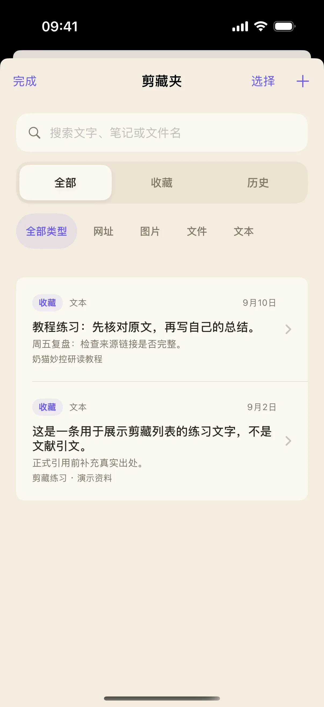
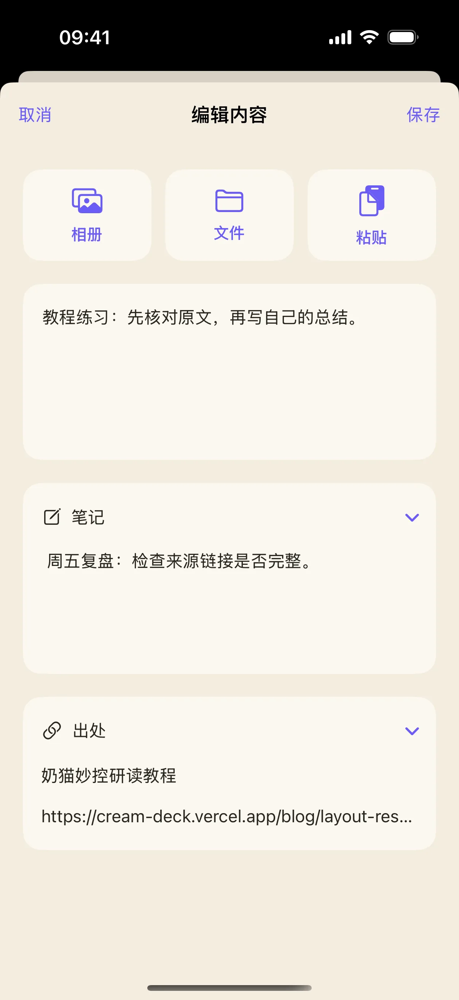
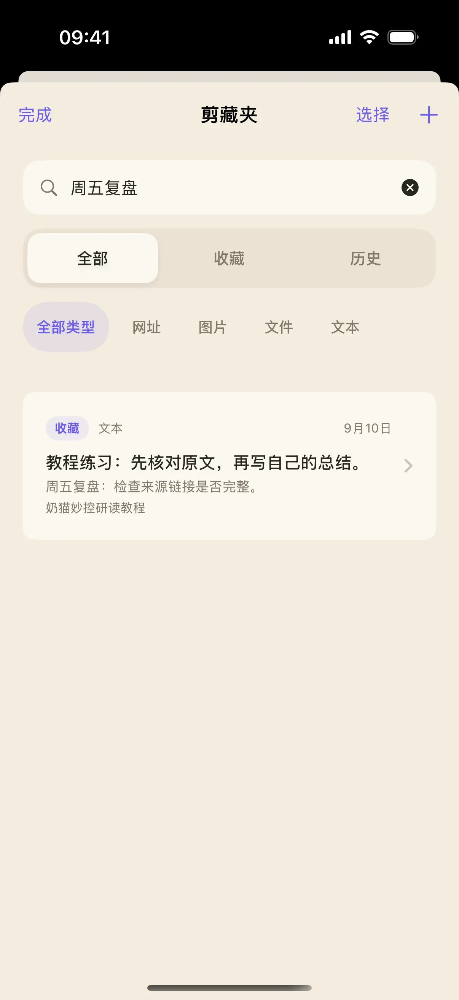

一条摘录刚保存时很容易理解，过几天再看，常常忘了从哪里来、为什么留下。奶猫妙控的剪藏编辑器把正文、笔记和出处分开保存。本文用一条明确标注的教程练习，把这三个部分补齐，再通过笔记里的“周五复盘”找回它。
开始前准备
- 打开研读布局，点“剪藏夹”进入列表；也可以参考研读布局教程查找入口。
- 准备一段允许保存的文字，以及它实际对应的来源标题和链接。
- 本文练习的来源链接指向奶猫妙控研读教程；练习句本身不是该页面的原文引用。
1. 新建收藏，把要留存的正文放在文字区
在剪藏夹右上角点“新建收藏”。在文字区输入“教程练习：先核对原文，再写自己的总结。”。真实摘录时，把原文放在这里，并保留影响含义的上下文；自己的判断放到下一步的笔记区。
新建页面上方还提供“相册”“文件”“粘贴”。本篇先完成纯文字练习，避免在整理来源时同时处理多个附件。
参考：研读布局中的剪藏入口。
2. 展开笔记，写下以后要做的事情
点“笔记”展开输入区，写入“周五复盘：检查来源链接是否完整。”。这行文字说明保存目的，也提供以后检索的关键词。
笔记不必复述正文。可以写“引用前核对页码”“与上一版方案比较”之类的下一步动作。每条笔记有长度限制，页面提示超限时先缩短笔记，再保存。
3. 填写来源标题和链接，再保存
向下滚动，展开“出处”。来源标题填写“奶猫妙控研读教程”，来源链接填写 https://cream-deck.vercel.app/blog/layout-research。真实材料应替换成实际页面地址，不能只写搜索引擎首页或凭印象补一个标题。
点右上角“保存”，返回列表后应出现“教程练习”这条内容，并能看到笔记摘要。保存后再打开详情确认，比只在编辑器里填完更可靠。

4. 在详情里分别检查正文、笔记和出处
打开刚保存的条目。详情页把正文与“笔记”分开呈现，出处区域展示来源信息；有效的网页链接可以从这里打开。
检查正文没有混进自己的补充，笔记能说明下次要做什么，来源标题和链接指向同一份材料。若摘录来自多个页面，分别建立条目更容易保留出处，之后再统一导出。

5. 需要补充时，编辑原来的条目
在详情里点“编辑”，修改现有文字、笔记或出处，完成后再点“保存”。已有笔记和出处会在编辑页展开，便于接着补充。
本例可以保留“周五复盘”作为固定检索词，再追加具体检查结果。修改来源前先打开原链接核对；不要仅为了让条目显得完整而填入没有核实的信息。

6. 用笔记里的词找回这条收藏
返回剪藏夹，在搜索框输入“周五复盘”。即使正文里没有这几个字，也应找到这一条，因为搜索支持笔记内容。
如果没找到，先把范围切回“全部”，内容类型也切回“全部类型”，再重试关键词。范围、内容类型和搜索会共同缩小结果；排查时逐项放宽条件，能分清是条目不存在还是被筛选隐藏。

操作不符合预期时
手动新建会自动知道我是从哪里复制的吗？
不要依赖这一点。手动练习按页面填写来源标题和链接，再在详情页核对；只有确认过的来源信息才适合作为以后引用的依据。
为什么写了笔记却不能保存？
先确认正文或附件至少有一项内容，且没有正在导入附件；再检查笔记是否超过页面提示的长度限制。只填笔记而正文、附件都为空时，不能作为空内容保存。
可以把这些条目一起带到电脑上吗？
可以在剪藏夹选择多条内容并导出，通过系统分享面板保存到文件或选择可用的接收方式。导出格式与选择范围见下一篇教程。
本文按奶猫妙控 1.2.0 的界面与操作编写，更新于 2026 年 9 月 10 日。查看更新日志 · 连接与权限帮助。